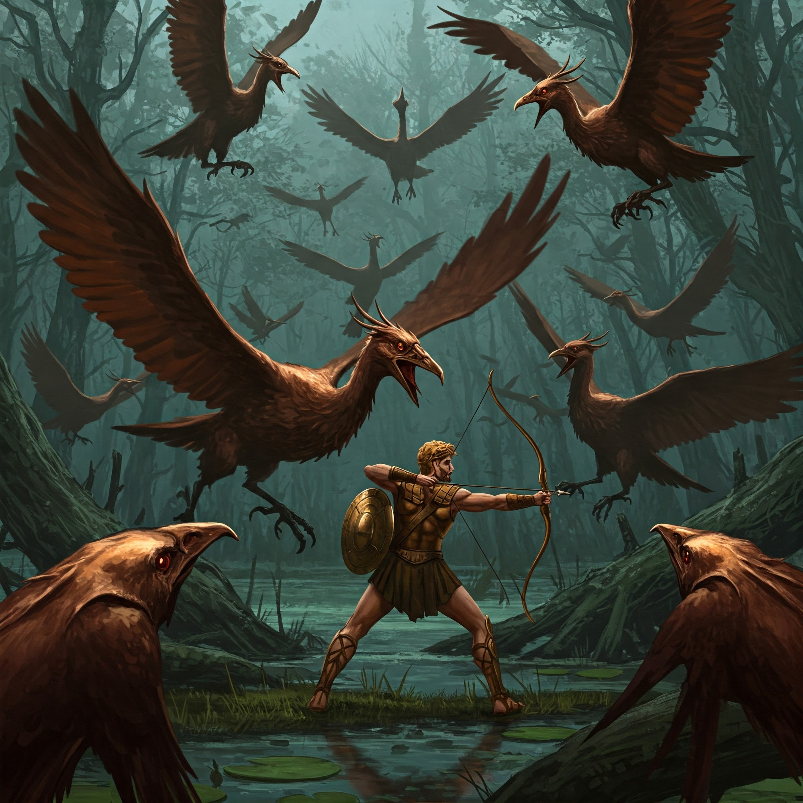

El lago Estínfalo, otrora un espejo de aguas cristalinas, yace cubierto por un silencio mortal. No cantan pájaros, no saltan peces. Solo se oye, de cuando en cuando, el crujido de huesos bajo las botas. Miras al cielo y lo ves: una nube metálica que oscurece el sol. Plumas de bronce. Garras afiladas como espadas. Las aves carnívoras de Ares te observan desde las copas de los árboles petrificados.
Un susurro rompe el silencio:
"Sus plumas atraviesan armaduras... y su canto paraliza el alma."
—Un sobreviviente, escondido en un barril, con un ojo menos.
